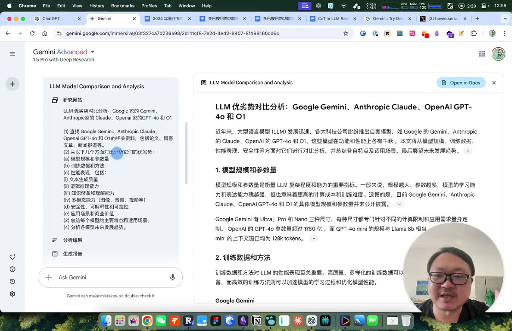

深度研究怎么验收：从一份漂亮报告往回查
来源：howie和小能熊 · Google Deep Research 五个案例 · 50 分钟 · 标准学习稿。视频发布于 2024 年，界面、价格、模型能力均按历史演示理解，本文不提供现行购买建议。
一句话抓住核心
让研究助手替你搜集与组织材料，自己掌握问题、来源选择和关键结论的验收。
搜了一百多个网站，究竟说明什么
视频开头展示模型对比任务：助手先列研究计划，经确认后搜索，再生成带引用的报告。界面显示研究了 151 个网站。[00:01:20]
这个数字说明系统执行了较多检索活动，却不足以证明报告全面或可靠。来源可能重复、互相转载，也可能只覆盖容易搜到的角度。评价一份报告，要继续问：重要子问题有没有回答？关键断言是否能被原文支持？遗漏了什么？

第一个可控制的环节：研究计划
直接说“研究一下某产品”，范围很容易膨胀。演示中的助手先提供计划，让用户修改后再运行。这个确认点很有价值：可以提前发现目标跑偏，减少在错误方向上的长时间搜索。[00:07:55]
研究计划至少应明确对象、用途、比较维度、时间范围和交付形式。例如，我需要比较两个产品的检索能力，重点是中文长问题、来源时效和引用质量，最终用于设计一次小规模评测。这样得到的报告才更可能支持下一步。
充电头案例：泛泛介绍与实际决策差在哪里
视频让助手研究某年的特色充电头，得到氮化镓、多口输出、功率和安全等信息。对于熟悉主题，这是一张初步地图。[00:11:40]
若要买给自己，还要补充设备需求、接口、携带场景、预算和适用地区。技术趋势再丰富，缺了这些条件也难以选出合适产品。这是从“主题报告”走向“决策支持”要跨过的一步。
会员案例：搜索语言会改变来源集合
作者比较 Google One、AI 会员和 YouTube 会员之间的关系。一次搜索带入了不同地区与币种，报告的重点也偏离了原问题；之后调整检索语言，再比较结果。[00:14:10]
可迁移的经验是：检索语言、地区和关键词会影响找到哪些资料。涉及海外技术时，英文官方资料可能提供更直接的证据；涉及本地政策和产品规则时，则应优先当地官方来源。
不能把一次对比推成“所有英文来源都更好”。两个结果可能同时变化了搜索词、来源数量、时间和计划，没有控制这些条件，就无法把差异全部归因于语言。
专业主题案例：自信也需要证据
视频用神经科学主题检查助手的专业内容，并将两组来源进行对比。这提醒我们：熟悉某领域的人，可能更容易发现遗漏；陌生领域里，流畅的长文更容易让人误以为自己已理解。[00:19:00]
不过，作者的个人把握和另一个模型的赞许，都不能代替逐条验证。本篇不采用视频中关于神经递质、成瘾或健康影响的医学结论，也不把未读过的内容直接判为错误。
真正可迁移的是核查过程：打开支持核心论点的原始来源，查看研究对象、方法与限制；区分研究结果、综述解释和创作者延伸。如果资料不足，就把问题留在未解决清单里。
思维链研究案例：先找地图，再读原文
最后一个技术案例让多个搜索产品围绕思维链研究组织资料。报告能帮助发现相关论文和下一步问题，但技术细节仍需回到论文、代码与实验条件。[00:32:15]
这类任务的价值，常体现在减少“从哪里开始”的成本。报告应该把读者带到更可靠的材料前，而不能让读者停在一层层摘要里。
一份深度研究报告，我会这样验收
| 维度 | 具体检查 |
|---|---|
| 目标贴合 | 是否回答最初问题，有没有长篇偏题？ |
| 来源质量 | 是否存在官方或原始材料，转载是否重复计算？ |
| 证据支持 | 引用打开后，是否真的支持对应结论？ |
| 覆盖与冲突 | 重要方面有无遗漏，来源不一致时怎样处理？ |
| 时效与范围 | 日期、地区、产品版本是否匹配？ |
| 可用性 | 结论能否支持一个决定或下一步行动？ |
这是基于案例整理的迁移框架，和视频中“十倍效率”“已经达到某级智能”等评价分开。效率需要同时计算人工提问、等待、阅读和核查时间。
迁移练习：亲手审一份小报告
选一个你有一定了解、风险较低的主题。给研究助手明确任务，保留原计划与最终报告。抽查五个关键断言，逐条记录引用是否匹配、是否过时、是否夸大。
再把发现的问题变成第二版计划，只修改确有证据的缺口。最后写三行：节省了哪部分工作；增加了哪些核查成本；哪些问题仍需要人工完成。这样才得到一份能复用的产品体验分析。